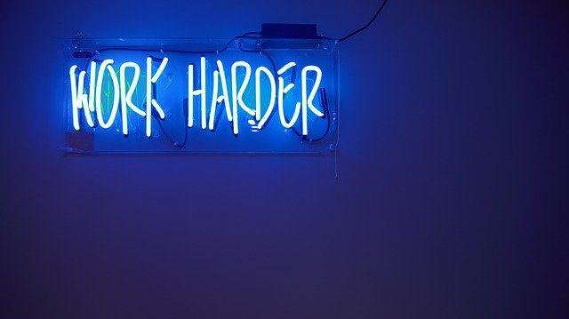

Hello!
My name is Miguel Sosa and I'm an UX Designer and (in a soon future) a Front-end Developer.
I've always been interested in the emotion and experience that design can give you, after all, good design is focused on giving the best experiences. With this in mind, I decided to make an UX Design course at Treehouse, where I learned topics such as Critiquing design, Visual Design, and UX Research and Test, etc.
It always baffled me how many extensions design has: industrial, product, graphic, game, web design, etc. How can we design something good with so many ways to do it?
This is where UX Design shines: it puts the focus on the user instead of the object. When we design with the user in mind, we can give him everything he wants and needs, even if he doesn't know himself.
UX Design is the reason why companies like Google and Apple got so far: by researching and testing products with their audiences they can create the best design possible.
Now, this is why I learned UX Design, It's the purest form of design. As an UX Designer, I can work with anything that produces experience and I'll make sure yours it's fantastic.
And for who is reading this, think about it, how does the current device your using right now makes you feel? How does your favorite app make you feel? Have you ever considered why is your preferred app? I invite you to give it some thought, maybe you'll find surprising results.
